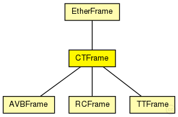

This documentation is released under the Creative Commons license
This documentation is released under the Creative Commons licenseRepresents a critical traffic frame
CTFrames are displayed as small black rectangles in the GUI
See also: EtherFrame
Author: Till Steinbach
The following diagram shows usage relationships between types. Unresolved types are missing from the diagram. Click here to see the full picture.

The following diagram shows inheritance relationships for this type. Unresolved types are missing from the diagram. Click here to see the full picture.
| Name | Type | Description |
|---|---|---|
| EtherFrame | packet |
Common base class for classes representing Ethernet II and 802.3 frame types, containing their common header fields. |
| Name | Type | Description |
|---|---|---|
| RCFrame | packet |
Represents a RC frame |
| TTFrame | packet |
Represents a TT frame |
| Name | Type | Description |
|---|---|---|
| ctID | unsigned short | |
| ctMarker | unsigned int | |
| displayString | string | |
| dest | MACAddress | |
| src | MACAddress | |
| frameByteLength | int |
frame length without physical layer overhead (preamble, SFD, carrier extension); used by MAC layer |
// // Represents a critical traffic frame // // CTFrames are displayed as small black rectangles in the GUI // // @see EtherFrame // // @author Till Steinbach packet CTFrame extends EtherFrame { // Critical traffic ID (from MAC) (for TT and RC messages). @customize(true); abstract unsigned short ctID; // Critical traffic marker (from MAC) (for TT and RC messages). @customize(true); abstract unsigned int ctMarker; string displayString = "b=15,15,rect,black,kind,5"; }
This documentation is released under the Creative Commons license